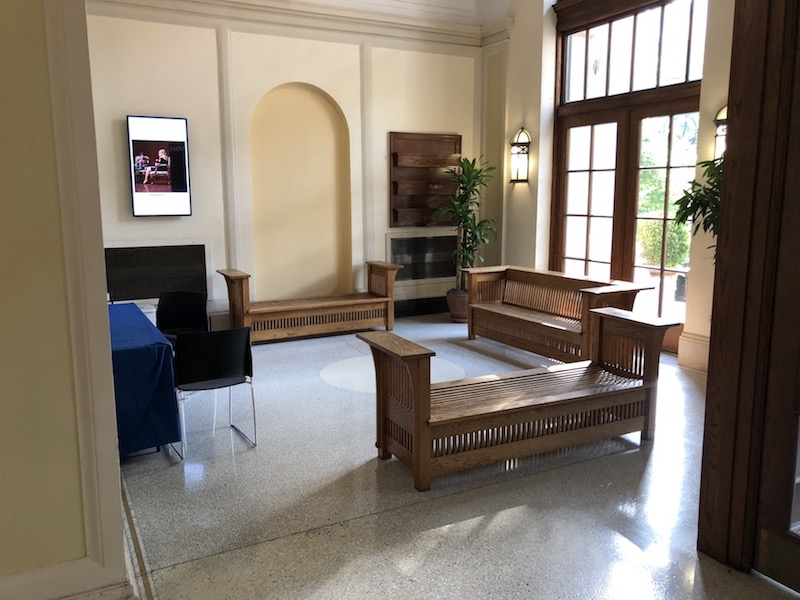
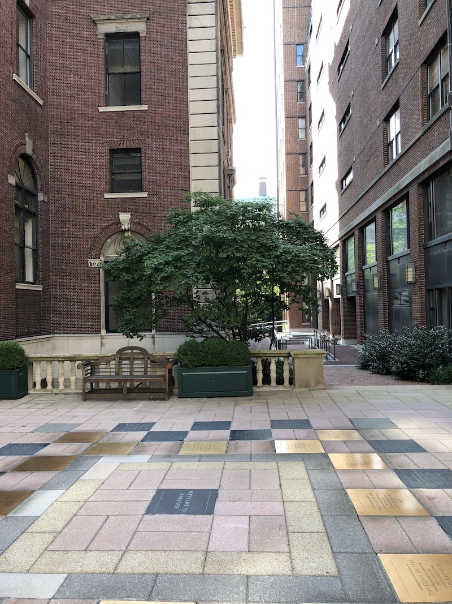
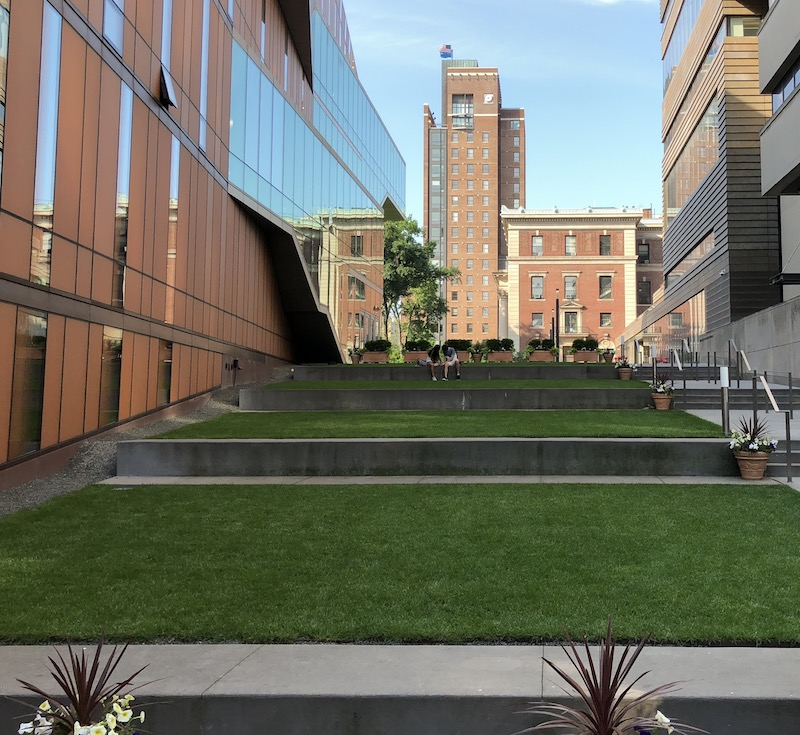
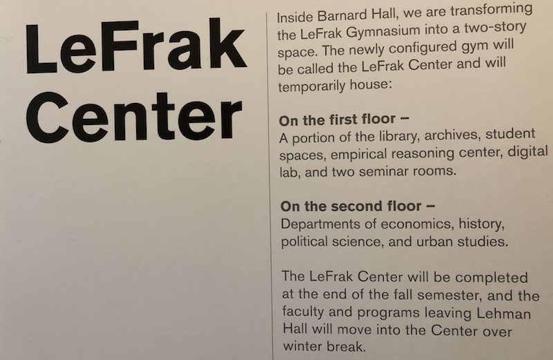
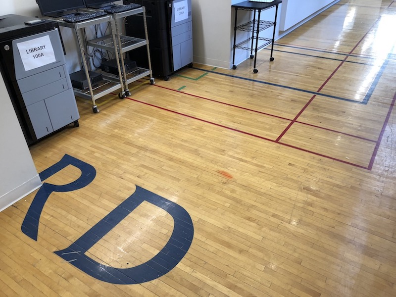
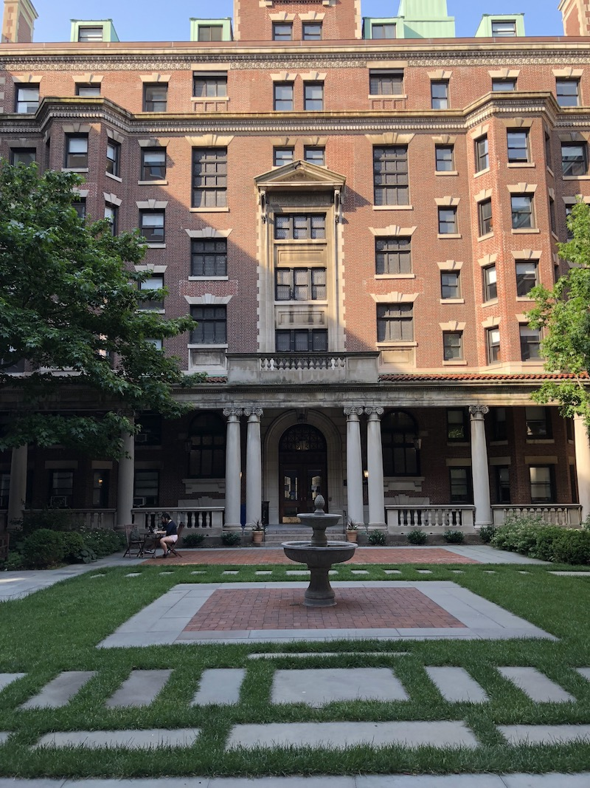

Yesterday, Sunday, July 1, 2018, we visited Barnard College in New York City. This was not a typical campus visit because it was the weekend and there was no one to give us a tour. Instead, we leveraged a PDF to give ourselves a self-guided tour.
Barnard is amazing because it seems to be only 4 square blocks (4 acres) across Broadway from Columbia University. The college is a marvel of compression: It has all of the things that other small colleges have, but on a smaller scale: Dormitories, an old historic building, a modern science building.  According to Wikipedia, Barnard has 2,360 students -- I can't imagine that they all live in Barnard dorms in that 4 block compass, so there must be dorms in surrounding buildings. Still, it felt like a campus. 
We got a very palpable feeling that Barnard is a safe place in the big city. You can take any classes you want at Columbia, and still return to this safe place. On a Sunday, it was absolutely charming. There is a pretty stair-stepped green area next to the Diana Center.  A young couple was sitting there talking; I guess it is culturally stereotypically to imagine that they were young lovers having a Sunday morning conversation, but there they were.
Some of the buildings were unlocked. We wandered into the LeFrak Center,  which is housing a number of campus functions where the new Milstein Center is going up. The temporary library in LeFrak is in space that was formerly the gym; we thought it was cool that the old gym floor is still visibly in place. 
Caroline got a positive vibe from the place, and it is on her "possibles" list. Having said that, we are probably going to have to go back and/or read a lot more about Barnard: We understand the resources for women and the research opportunities for women's history: But . . . what does one get from Barnard that one wouldn't get from regular admission to Columbia? One thing that I imagine Caroline might get from Barnard is full professors teaching the first year seminar (if they have one) and selected introductory courses.  There will probably be a Part 2 to this one, but: so far, so good.
comments powered by Disqus